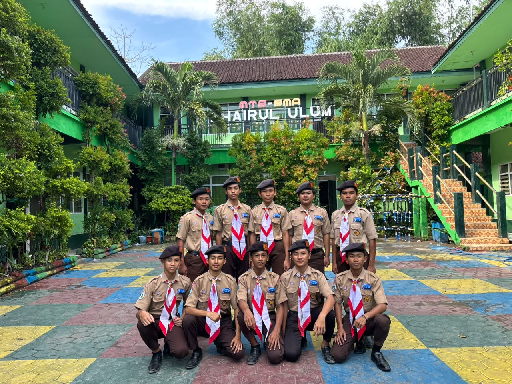

BIODATA REGU
Nama ReguCharizard
Pangkalan / UtusanKhairul Ulum
Alamat PangkalanJl. Raya Tambelangan, Kecamatan Tambelangan, Kabupaten Sampang
Daftar Anggota Regu
| No. | Nama Peserta | Jabatan |
|---|---|---|
| 1. | Wiro Ali | PINRU |
| 2. | Salim | WAPINRU |
| 3. | Muhammad Yusron | Anggota |
| 4. | Syd. Abdurrahman Zain Assegaf | Anggota |
| 5. | Syd. Ubaydillah | Anggota |
| 6. | Moh. Anwar | Anggota |
| 7. | Ahmad Jeilani | Anggota |
| 8. | Kevin | Anggota |
| 9. | Seipul Anam | Anggota |
| 10. | M Ramadani | Anggota |
Foto Regu

PARISADA XXI Jawa Timur 2026
Regu Charizard